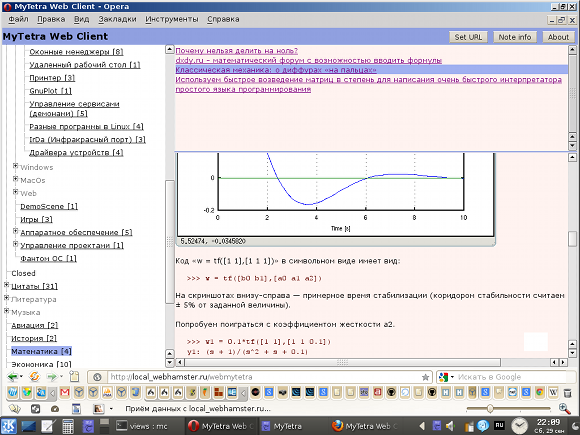
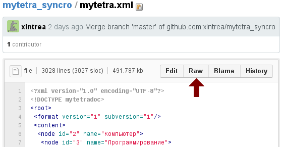
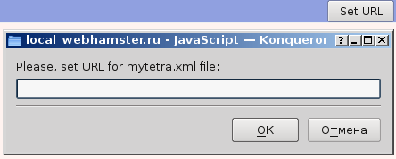

MyTetra Web Client — это сервис для доступа к базе данных программы MyTetra прямо из браузера в сети Интернет.
Актуальная верия: 0.17 от 29.09.2012
Поддерживаемая версия данных MyTetra: 1.30.x
Лицензия JavaScript исходников: GPL v.3.0
Описание
Иногда возникает необходимось посмотреть свои MyTetra-записи с чужого компьютера. Нет никакого смысла устанавливать программу MyTetra и настраивать синхронизацию на чужом компьютере только для того, чтобы посмотреть пару-тройку записей. Это слишком долго, а установка программ может быть запрещена политикой безопасности, если вы находитесь, например, в сети предприятия. Специально для таких ситуаций предусмотрен интернет-сервис MyTetra Web Client.
Кратко говоря, с помощью сервиса MyTetra Web Client можно быстро получить доступ к своей базе данных MyTetra.
Примечание: Помимо MyTetra Web Client, в 2013 году был открыт сервис MyTetra Share. В то время как MyTetra Web Client показывает записи через JavaScript, держа их только в памяти браузера, сервис MyTetra Share позволяет разместить свою базу знаний в интернете в "развернутом" виде. Страница с деревом и страницы записей в MyTetra Share представляют собой обычные HTML-страницы. Выбирайте, что вам удобнее. Автор программы предпочитает пользоваться MyTetra Share.
Скриншот MyTetra Web Client

Демонстрация работы
Скопируйте в буфер обмена следующую ссылку:
https://raw.github.com/xintrea/mytetra_syncro/master/mytetra.xml
Перейдите в MyTetra Web Client, и вставьте эту ссылку в диалоге запроса URL. Откроется актуальная база знаний автора MyTetra.
Кто может этим воспользоваться?
Сервисом MyTetra Web Client может воспользоваться любой пользователь программы MyTetra, хранящий свою базу знаний на публичных открытых серверах (например, на GitHub.com). Для работы MyTetra Web Client регистрация не требуется.
Как это работает?
Для начала работы откройте браузер и перейдите на страницу сервиса MyTetra Web Client.
MyTetra Web Client запросит URL, по которому расположен основной файл базы данных mytetra.xml. Если файл по указанному URL будет действительно существовать, MyTetra Web Client отобразит привычное дерево навигации, список записей в выбранной ветке, текст выбранной записи.
Пример для GitHub.com
Предположим, база данных MyTetra хранится на GitHub. Необходимо через браузер зайти на GitHub, перейти в репозитарий с данными MyTetra, кликнуть на файл mytetra.xml, нажать на кнопку RAW и скопировать в буфер обмена ссылку из строки браузера:

Внимание! При простом копировании ссылки с кнопки RAW, ссылка работать не будет! Нужно обязательно нажать на RAW, и скопировать полученную ссылку из адресной строки браузера.
Неправильная ссылка:
https://github.com/user/repo/raw/master/mytetra.xml
Правильная ссылка:
https://raw.github.com/user/repo/master/mytetra.xml
Этот URL нужно ввести в MyTetra Web Client при начале работы:

Пример для Bitbucket.org
Внимание! На сервисе Bitbucket.org кнопка RAW дает ссылку не на актуальную копию файла, а на файл в текущем коммите. Когда добавляются еще коммиты, ссылка, полученная по кнопке RAW, начинает ссылаться на старую копию файла.
Сконструировать ссылку на файл для Bitbucket.org можно таким способом:
https://bitbucket.org/user_name/mytetra_repository/raw/master/mytetra.xml
Что внутри?
MyTetra Web Client — это JavaScript-программа, работающая в окне браузера, написанная с использованием библиотеки jQuery. Работа построена на AJAX-запросах, проходящих через специальный проксирующий шлюз, расположенный на сайте WebHamster.ru. Данный шлюз обеспечивает междоменное взаимодействие AJAX-запросов и получаемых из хранилища данных. Шлюз работает только с данными MyTetra.
Поддерживаемые браузеры
Работа MyTetra Web Client проверена в браузерах:
{kind=link}